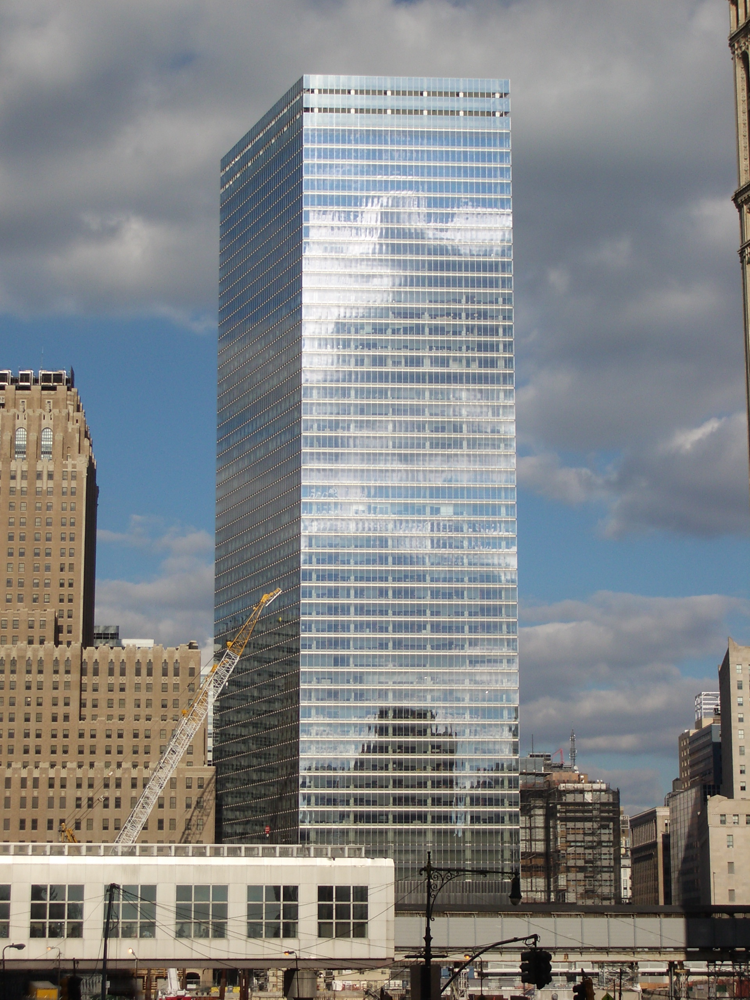

World Trade Center
7 World Trade Center (7 WTC or WTC-7) refers to two buildings that have existed at the same location within the World Trade Center site in Lower Manhattan, New York City. The original structure, part of the original World Trade Center, was completed in 1987 and was destroyed in the September 11 attacks in 2001. The current structure opened in May 2006. Both buildings were developed by Larry Silverstein, who holds a ground lease for the site from the Port Authority of New York and New Jersey.The original 7 World Trade Center was 47 stories tall, clad in red granite masonry, and occupied a trapezoidal footprint. An elevated walkway spanning Vesey Street connected the building to the World Trade Center plaza. The building was situated above a 7 World Trade Center (7 WTC or WTC-7) refers to two buildings that have existed at the same location within the World Trade Center site in Lower Manhattan, New York City. The original structure, part of the original World Trade Center, was completed in 1987 and was destroyed in the September 11 attacks in 2001. The current structure opened in May 2006. Both buildings were developed by Larry Silverstein, who holds a ground lease for the site from the Port Authority of New York and New Jersey.The original 7 World TradeConsolidated Edison power substation, which imposed unique structural design constraints. When the building opened in 1987, Silverstein had difficulties attracting tenants. Salomon Brothers signed a long-term lease in 1988 and became the main tenant of 7 WTC.The original 7 World Trade Center was 47 stories tall, clad in red granite masonry, and occupied a trapezoidal footprint. An elevated walkway spanning Vesey Street connected the building to the World Trade Center plaza. The building was situated above a Consolidated Edison power substation, which imposed unique structural design constraints. When the building opened in 1987, Silverstein had difficulties attracting tenants. Salomon Brothers signed a long-term lease in 1988 and became the main tenant of 7 WTC.
The original 7 World Trade Center was 47 stories tall, clad in red granite masonry, and occupied a trapezoidal footprint. An elevated walkway spanning Vesey Street connected the building to the World Trade Center plaza. The building was situated above a Consolidated Edison power substation, which imposed unique structural design constraints. When the building opened in 1987, Silverstein had difficulties attracting tenants. Salomon Brothers signed a long-term lease in 1988 and became the main tenant of 7 WTC.7 World Trade Center (7 WTC or WTC-7) refers to two buildings that have existed at the same location within the World Trade Center site in Lower Manhattan, New York City. The original structure, part of the original World Trade Center, was completed in 1987 and was destroyed in the September 11 attacks in 2001. The current structure opened in May 2006. Both buildings were developed by Larry Silverstein, who holds a ground lease for the site from the Port Authority of New York and New Jersey.The original 7 World Trade7 World Trade Center (7 WTC or WTC-7) refers to two buildings that have existed at the same location within the World Trade Center site in Lower Manhattan, New York City. The original structure, part of the original World Trade Center, was completed in 1987 and was destroyed in the September 11 attacks in 2001. The current structure opened in May 2006. Both buildings were developed by Larry Silverstein, who holds a ground lease for the site from the Port Authority of New York and New Jersey.The original 7 World Trade